Đi từ chỉ số đến nghiệp vụ
Dùng Mở bản đồ giám sát để xem xe trên bản đồ; Xem tất cả để mở danh sách chuyến; Mở thông báo hoặc nút chuông trên thanh đầu trang để xử lý cảnh báo.
Hướng dẫn theo giao diện hiện tại: từ tạo tài xế, xe, tuyến và chuyến đến lịch tự động, cảnh báo, báo cáo và cổng tài xế.
Ảnh chụp trong tài liệu dùng dữ liệu mẫu; số liệu và nền bản đồ thực tế có thể khác.
TÀI KHOẢN & THỨ TỰ THIẾT LẬP
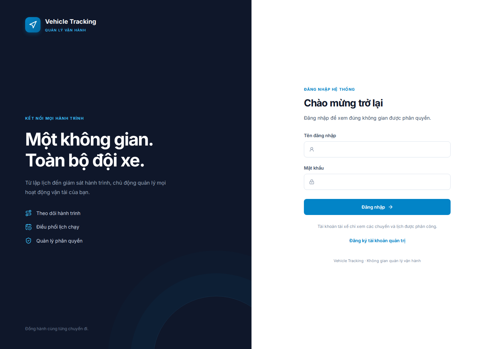
Mở địa chỉ website do đơn vị vận hành cung cấp. Nhập tên đăng nhập và mật khẩu. Tài khoản quản trị được đưa đến Dashboard; tài khoản tài xế đến Chuyến của tôi sau khi hoàn tất yêu cầu đổi mật khẩu, nếu có. Đăng xuất bằng nút tại khu vực tài khoản.
Để tạo tài khoản quản trị, chọn Đăng ký tài khoản quản trị trên trang đăng nhập. Nhập tên đăng nhập, mật khẩu tối thiểu 8 ký tự và xác nhận mật khẩu, sau đó trở lại đăng nhập. Biểu mẫu hiện không yêu cầu mã mời. Tài khoản tài xế được quản trị viên cấp tại Người dùng.
Quản trị viên thiết lập chuyến đầu tiên theo thứ tự:
Trên màn hình nhỏ, bấm nút mở điều hướng ở góc trên để chọn trang. Nút Hướng dẫn sử dụng trong thanh điều hướng quản trị mở tài liệu này ở tab mới.
TỔNG QUAN VẬN HÀNH
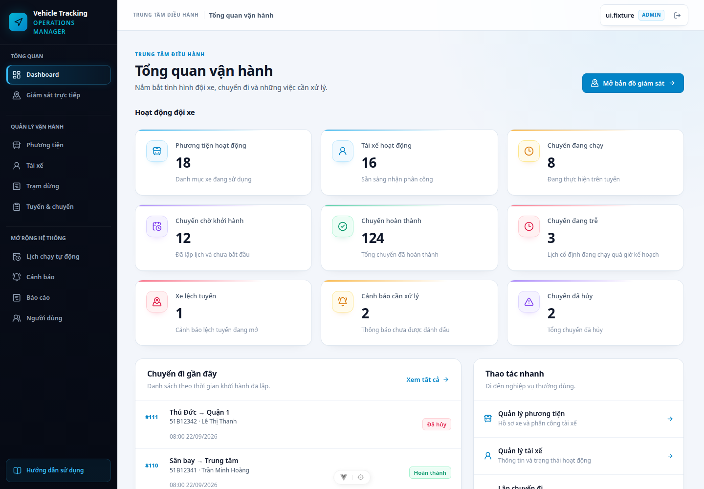
Vào Dashboard để xem các chỉ số xe và tài xế đang sử dụng, chuyến chờ khởi hành, đang chạy, hoàn thành, đang trễ hoặc đã hủy, xe lệch tuyến và cảnh báo chưa đọc. Dữ liệu trên trang được tải lại khoảng mỗi 15 giây.
Dùng Mở bản đồ giám sát để xem xe trên bản đồ; Xem tất cả để mở danh sách chuyến; Mở thông báo hoặc nút chuông trên thanh đầu trang để xử lý cảnh báo.
“Phương tiện hoạt động” và “Tài xế hoạt động” là số hồ sơ còn sử dụng, không phải số xe đang di chuyển hoặc số tài xế đang lái.
Nếu xuất hiện lỗi tải dữ liệu, bấm Thử lại và kiểm tra kết nối với máy chủ.
DANH MỤC ĐỘI XE
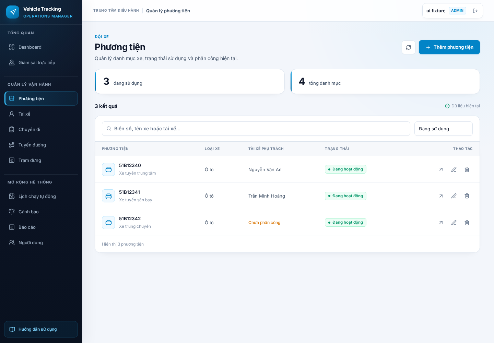
Vào Phương tiện → Thêm phương tiện. Chọn Ô tô hoặc Xe máy, nhập biển số, tên xe và mô tả nếu cần. Sau khi tạo, mở biểu mẫu sửa để gán tài xế mặc định.
Bấm Thêm xe. Biển số được chuẩn hóa thành chữ hoa và bỏ khoảng trắng, dấu chấm, gạch nối. Biển số trùng sẽ bị từ chối.
Tìm xe theo biển số, tên hoặc tài xế; bấm biểu tượng sửa để đổi thông tin và trường Tài xế mặc định, rồi chọn Lưu xe. Chọn Chưa gán tài xế nếu cần bỏ phân công.
NHÂN SỰ VẬN HÀNH
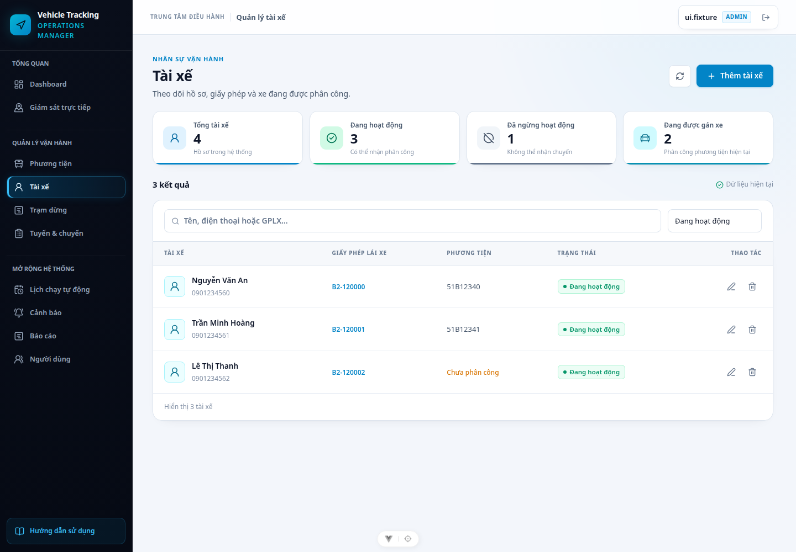
Vào Tài xế → Thêm tài xế. Nhập họ tên, số điện thoại và số giấy phép lái xe (GPLX), sau đó bấm Thêm tài xế.
Chọn biểu tượng sửa ở tài xế để cập nhật hồ sơ. Số GPLX được chuẩn hóa viết hoa và không được trùng, kể cả với hồ sơ đã ngừng sử dụng. Trước khi ngừng tài xế, hãy bỏ gán khỏi xe và xử lý các chuyến chưa kết thúc; nút ngừng sử dụng có bước xác nhận.
Gán tài xế cho xe tại Phương tiện hoặc cho chuyến tại Chuyến đi. Hồ sơ tài xế khác với tài khoản đăng nhập; nếu cần truy cập cổng tài xế, cấp tài khoản tại Người dùng.
ĐIỂM DỪNG TRÊN BẢN ĐỒ
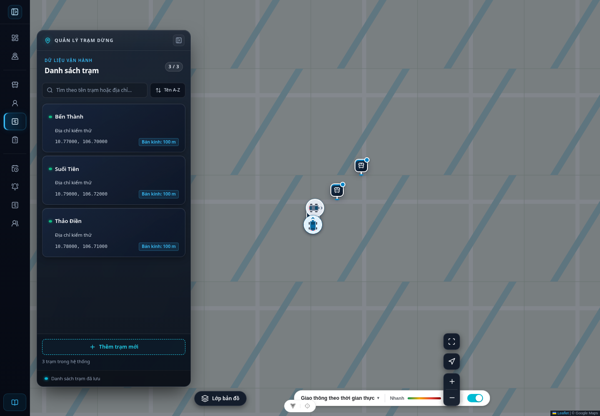
Vào Trạm dừng → Thêm trạm mới. Kéo bản đồ để vị trí mong muốn vào tâm ngắm, rồi bấm Chọn vị trí này.
Điền tên trạm, địa chỉ nếu có và bán kính check-in. Khi chọn vị trí, hệ thống thử lấy địa chỉ từ bản đồ. Kiểm tra và sửa địa chỉ mô tả theo thực tế; nếu có gợi ý khác, bấm Dùng địa chỉ này để áp dụng. Xem lại vị trí rồi bấm Tạo trạm. Có thể mở phần tọa độ nâng cao để kiểm tra hoặc chỉnh vĩ độ, kinh độ.
Chọn trạm trong danh sách để xem, chỉnh sửa hoặc ngừng sử dụng. Khi sửa vị trí, dùng Chọn lại vị trí trên bản đồ và lưu thay đổi.
LỘ TRÌNH ĐÃ LƯU
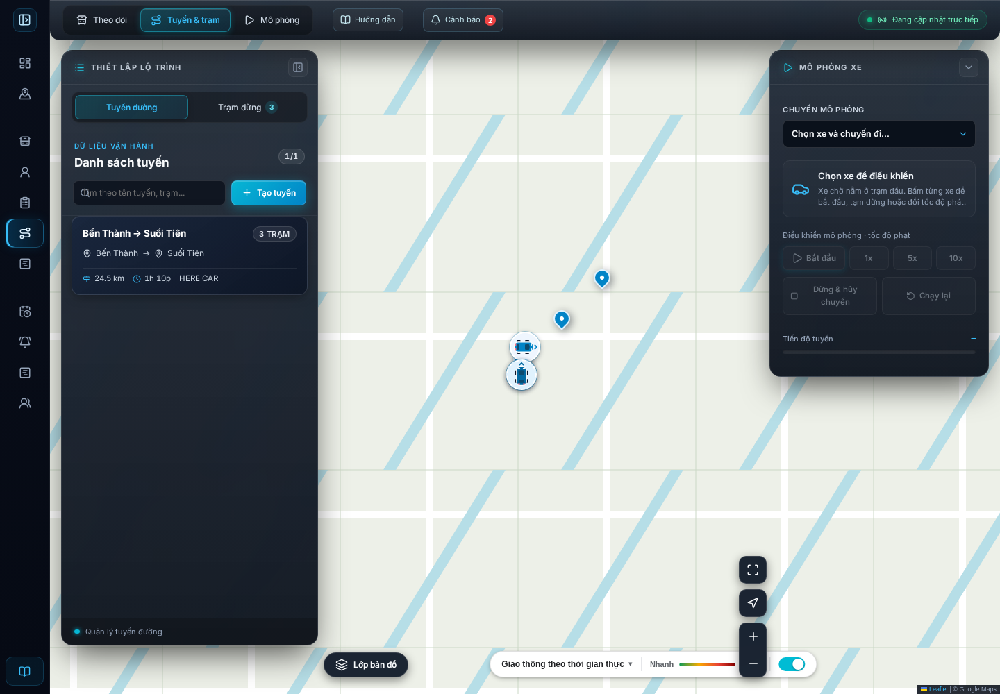
Vào Tuyến & chuyến → Tuyến đường → Tạo tuyến mới. Nhập tên, chọn tối thiểu hai trạm, sắp xếp trạm đầu, trạm giữa và trạm cuối; nhập thời gian dừng tại từng trạm nếu cần.
Bấm Tạo tuyến đường. Hệ thống tính đường và lưu tuyến; sau đó bấm Chi tiết để kiểm tra đường đi trên bản đồ, tổng cự ly và thời gian dự kiến. Nếu tính đường thất bại, thông báo lỗi xuất hiện; giữ lại thông tin đã nhập để thử lại.
Bấm Chi tiết tại dòng tuyến để xem bản đồ và các trạm có số thứ tự. Muốn đổi đường xe đi qua, bấm Sửa tuyến đường và làm theo hướng dẫn dưới đây. Thao tác này giữ nguyên các trạm. Tuyến là mẫu lộ trình; chuyến đi dùng bản chụp tuyến tại thời điểm lập chuyến.
CHỈNH ĐƯỜNG ĐI, GIỮ NGUYÊN TRẠM
Ở Tuyến đường, bấm Chi tiết tại tuyến cần xem. Khung chi tiết hiển thị đường đã lưu trên bản đồ, tổng cự ly, thời gian dự kiến và số trạm. Bấm biểu tượng trạm để xem tên, vai trò và thời gian dừng; dùng Toàn tuyến để đưa đường và các trạm vào khung nhìn.
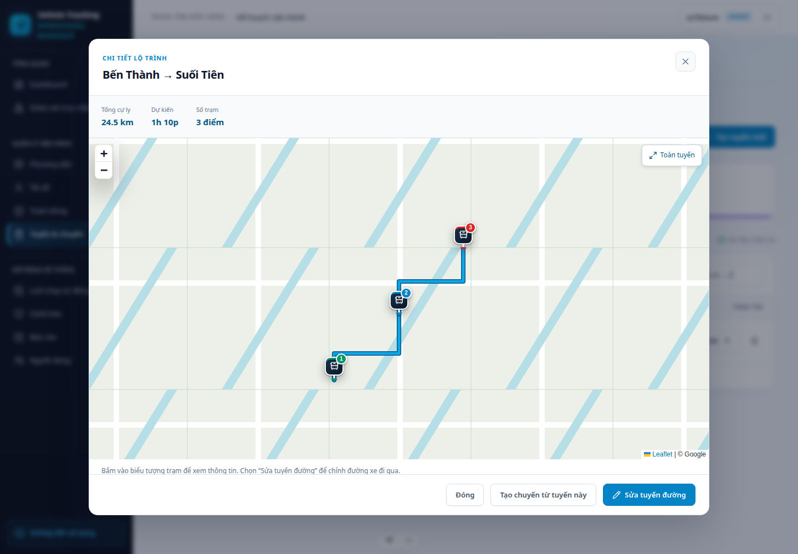
Bấm Sửa tuyến đường để mở bộ chỉnh đường ngay trên bản đồ đang xem. Trên máy tính, bộ chỉnh nằm bên cạnh bản đồ; trên điện thoại, cuộn xuống bên dưới bản đồ để thao tác. Điểm dẫn đường giúp tuyến đi qua con đường bạn chọn; điểm này không phải trạm check-in.
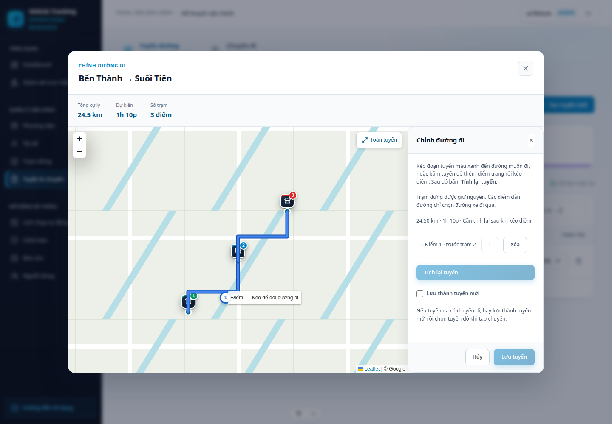
Kéo đoạn tuyến màu xanh đến đường mong muốn, hoặc bấm lên tuyến để thêm điểm trắng có số rồi kéo điểm đó. Kéo vùng trống để di chuyển bản đồ. Có thể dùng Xóa để bỏ một điểm dẫn đường trong danh sách.
Bấm Tính lại tuyến và xem đường, quãng đường, thời gian mới. Nếu chưa đúng, kéo điểm và tính lại lần nữa. Sau mỗi lần đổi điểm, cần tính lại trước khi lưu; xem và chỉnh nháp chưa làm thay đổi tuyến đã lưu.
Bấm Lưu tuyến. Nếu muốn giữ tuyến cũ hoặc tuyến đã có chuyến, chọn Lưu thành tuyến mới trước khi lưu. Nếu lưu thất bại, các điểm vừa chỉnh vẫn còn để thử lại. Sau khi lưu thành công, khung chi tiết hiển thị tuyến vừa lưu; Tạo chuyến từ tuyến này chọn đúng tuyến đó. Bản sao không tự đổi đường của các chuyến đã tạo.
LẬP CHUYẾN & THEO DÕI VÒNG ĐỜI
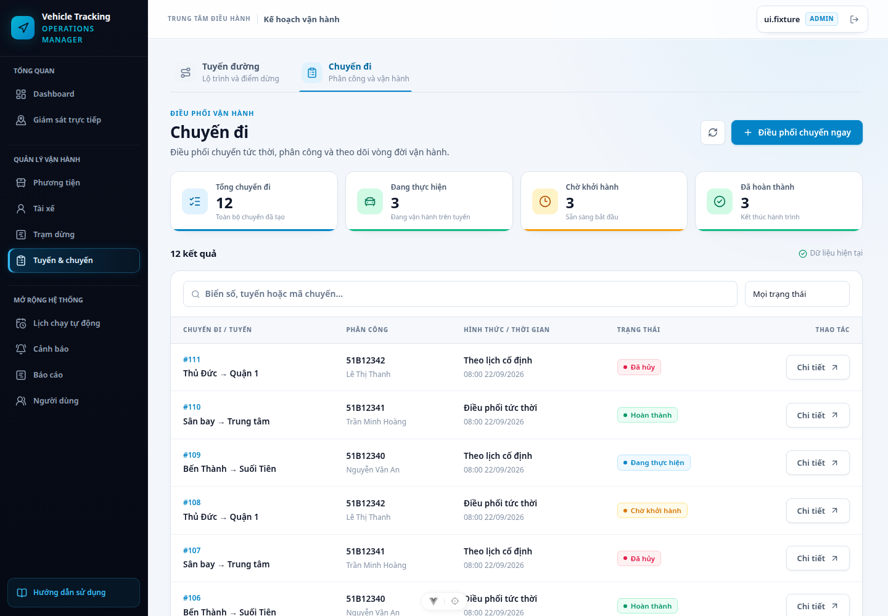
Vào Tuyến & chuyến → Chuyến đi → Điều phối chuyến ngay. Chọn xe đang sử dụng, tuyến đã lưu và tài xế nếu đã xác định, rồi bấm Tạo chuyến tức thời. Chọn tài xế ở bước này chỉ gửi yêu cầu nhận chuyến; chuyến hiển thị Chờ tài xế phản hồi và chỉ gán sau khi tài xế bấm Nhận chuyến. Loại chuyến này không yêu cầu nhập giờ xuất phát; thời gian thực tế bắt đầu khi người vận hành bấm khởi hành. Chuyến theo giờ cố định được tạo từ Lịch chạy tự động.
Bấm Chi tiết để mở màn hình chi tiết toàn trang. Khi chuyến còn chờ khởi hành, chọn Xe thực hiện rồi Lưu xe. Ở Tài xế thực hiện, chuyến tức thời dùng Gửi yêu cầu nhận chuyến; chuyến lịch cố định dùng Lưu tài xế. Xe và tài xế cần còn hoạt động, không chạy chuyến khác và đáp ứng kiểm tra lịch của chuyến. Thay đổi chỉ áp dụng cho chuyến đang mở, không sửa lịch cố định hay các chuyến tương lai.
Bấm Khởi hành khi xe và tài xế còn hoạt động, chuyến đã có tài xế, đồng thời xe và tài xế không chạy chuyến khác. Chuyến tức thời không bị giới hạn bởi giờ dự kiến. Chuyến đang chạy chỉ được Hoàn thành sau khi hệ thống ghi nhận xe qua trạm cuối.
Chi tiết chuyến hiển thị giờ thực tế, ETA, trạng thái từng trạm và lịch sử thay đổi tuyến. Giờ kế hoạch chỉ xuất hiện với chuyến sinh từ lịch cố định. “Đã qua trạm lúc…” là check-in tự động khi xe vào vùng trạm và có thông báo trên màn hình; đây không phải xác nhận việc đón hoặc trả khách.
Hủy chuyến cần lý do và bước xác nhận; lịch sử vẫn được giữ. Xóa chuyến chỉ dành cho chuyến chưa khởi hành, chưa có dữ liệu vận hành và không được tạo từ lịch chạy tự động.
TỰ ĐỘNG LẬP CHUYẾN
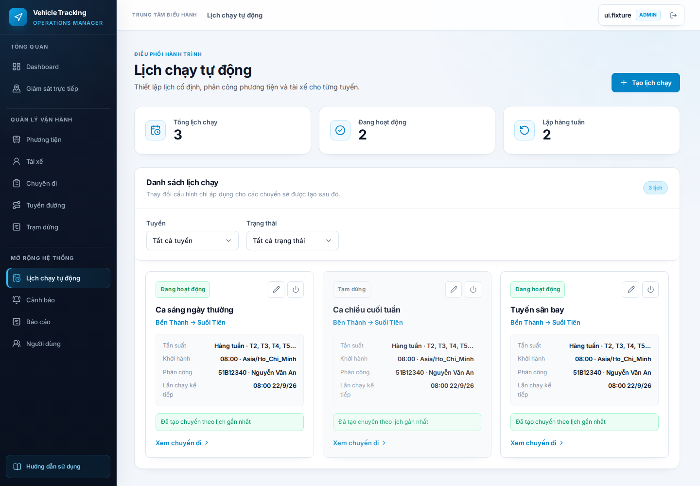
Vào Lịch chạy tự động → Tạo lịch chạy. Chọn tuyến, xe, tài xế đang hoạt động và múi giờ. Đặt tên lịch để dễ phân biệt.
Chọn Một lần rồi nhập ngày chạy, hoặc Hàng tuần và đánh dấu ít nhất một thứ trong tuần. Điền giờ khởi hành, ngày hiệu lực từ; ngày hiệu lực đến có thể để trống.
Bấm Tạo lịch chạy. Thẻ lịch hiển thị lần chạy kế tiếp và kết quả tạo chuyến gần nhất. Hệ thống xét các lần chạy trong khoảng bảy ngày sắp tới; chuyến được tạo khi bộ lập lịch xử lý, rồi xuất hiện tại Chuyến đi.
“Tự động” là tự tạo chuyến theo lịch. Chuyến vẫn chờ thao tác khởi hành: quản trị viên bấm Khởi hành trong chi tiết chuyến, hoặc tài xế dùng Mở bản đồ và khởi hành → Bắt đầu chuyến trong cổng tài xế.
Dùng bộ lọc Tuyến và Trạng thái để tìm lịch; bấm Xóa bộ lọc để xem tất cả.
VỊ TRÍ XE VÀ CÔNG CỤ BẢN ĐỒ
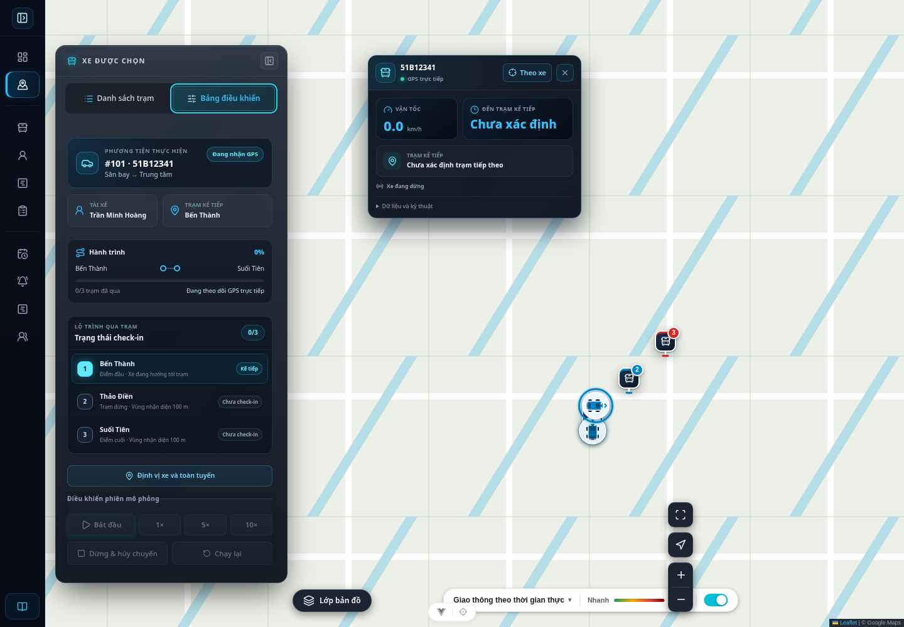
Vào Giám sát trực tiếp hoặc bấm Mở bản đồ giám sát từ Dashboard. Chọn xe trên bản đồ để mở thẻ Xe được chọn, xem chuyến, tuyến, tài xế và nguồn vị trí tương ứng. Dữ liệu vị trí có thể đến từ GPS hoặc mô phỏng; xe chưa có dữ liệu vị trí không nhất thiết xuất hiện trên bản đồ.
Sau khi chọn xe có chuyến, dùng hai nút Danh sách trạm và Bảng điều khiển để chuyển giữa tiến độ qua trạm và bộ điều khiển của chuyến đang chọn. Không cần quay lại trang quản lý chuyến. Khi bắt đầu mô phỏng từ giám sát, bộ điều khiển mở ngay tại đây; hai nút chuyển vẫn dùng được khi xe đang chạy.
Trên màn hình nhỏ, dùng các nút Theo dõi trực tiếp, Mô phỏng và Cảnh báo ở cạnh dưới để đổi bảng. Có thể thu gọn thanh điều hướng trên trang bản đồ để dành thêm diện tích cho bản đồ.
CHẠY THỬ HÀNH TRÌNH
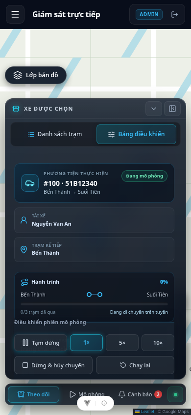
Trong Giám sát trực tiếp, chọn xe đang chờ rồi bấm Bắt đầu mô phỏng, hoặc mở bảng Mô phỏng và chọn Chuyến mô phỏng. Từ chi tiết chuyến cũng có nút Mở điều khiển chuyến.
Khi trạng thái kết nối trực tiếp đã sẵn sàng, kiểm tra đúng xe và chuyến rồi bấm Bắt đầu. Dùng Xem vị trí xe và tuyến đang chạy để nhìn xe trên bản đồ.
Bấm Tạm dừng hoặc Tiếp tục; chọn 1×, 5× hoặc 10× để đổi tốc độ phát. Dùng Danh sách trạm để xem trạm đã qua, trạm kế tiếp và trạm chưa qua; bấm Bảng điều khiển để quay lại các nút mô phỏng của cùng chuyến. Chọn một trạm trong danh sách để đưa trạm đó vào khung nhìn bản đồ.
Chọn xe đã hoàn thành, dừng hoặc gặp lỗi mô phỏng trên bản đồ. Trong thẻ Xe được chọn, bấm Mô phỏng lại và xác nhận Chuẩn bị lượt chạy mới. Hệ thống lưu lượt cũ, đưa xe về trạm đầu và mở bộ điều khiển; xe chỉ chạy sau khi bạn bấm Bắt đầu. Có thể thực hiện cùng thao tác bằng nút Chạy lại trong bảng mô phỏng.
| Nút | Kết quả |
|---|---|
| Tạm dừng / Tiếp tục | Giữ vị trí mô phỏng hiện tại rồi cho chạy tiếp. |
| 1× / 5× / 10× | Đổi tốc độ phát, không đổi vận tốc km/h của xe trong mô phỏng. |
| Mô phỏng lại / Chạy lại | Sau xác nhận, đưa xe về trạm đầu và giữ mã chuyến. Lượt chạy, vị trí và check-in cũ được lưu riêng; thao tác này không tự cho xe khởi hành. |
| Dừng & hủy chuyến | Sau xác nhận, dừng mô phỏng và hủy chuyến; lịch sử vị trí vẫn được giữ. |
Hành trình của xe chạy trên tuyến đã lưu và tự điều chỉnh theo dữ liệu giao thông hiện tại khi có. Khi chưa có dữ liệu giao thông mới, hệ thống tiếp tục theo tốc độ cơ sở của tuyến. Cảnh báo lệch tuyến chỉ phát sinh khi vị trí xe thực tế hoặc dữ liệu mô phỏng vượt ngưỡng; việc tạo đường thay thế vẫn phụ thuộc dữ liệu định tuyến khả dụng.
Thời gian hành trình dùng để đối chiếu với thời lượng kế hoạch, không tính lúc tạm dừng. Nút 5× và 10× giúp chạy thử nhanh hơn ngoài đời; thời gian hành trình vẫn được tính theo tốc độ giao thông áp dụng. Tiến độ trên tuyến là chỉ số riêng. Xem kết quả và so sánh các lượt chạy lại trong Báo cáo.
DỮ LIỆU GIAO THÔNG & ƯỚC TÍNH
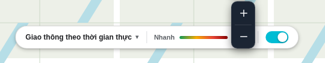
Bật/tắt lớp giao thông bằng công tắc Giao thông trực tiếp phía dưới bản đồ. Nếu dữ liệu chưa tải được, bấm Thử lại. Màu đường chỉ cho biết tình trạng giao thông đang nhận được, không đủ để khẳng định một đoạn đường đã đóng.
Thời lượng ước tính khi điều phối chuyến tức thời dựa trên tuyến đã lưu và chưa phải ETA giao thông. Giờ kế hoạch chỉ áp dụng cho chuyến sinh từ lịch cố định. ETA trong chi tiết chuyến là thời gian đến ước tính dựa trên vị trí, tuyến và dữ liệu giao thông khả dụng. Khi hiển thị dữ liệu cũ hoặc chưa cập nhật, cần kiểm tra thực tế trước khi điều phối.
Hệ thống có thể tạo tuyến thay thế khi đánh giá được giao thông ảnh hưởng đáng kể. Không phải mỗi đoạn đường màu đỏ đều làm xe đổi tuyến; nếu không có đường khả dụng hoặc tuyến mới không cải thiện ETA, hệ thống có thể báo không đổi được.
XEM VÀ XỬ LÝ THÔNG BÁO
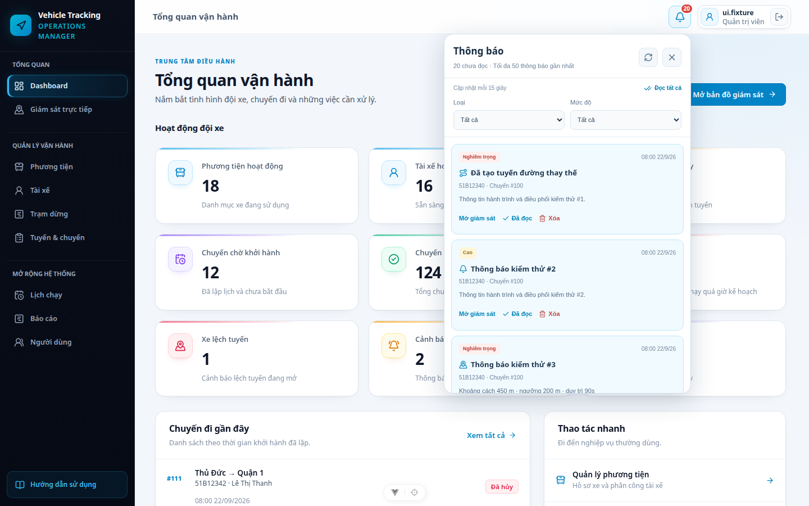
Bấm nút chuông trên thanh đầu trang admin để xem tối đa 50 thông báo gần nhất. Số trên chuông là số chưa đọc trong danh sách này. Thông báo tự tải lại khoảng mỗi 15 giây khi tab trình duyệt đang hiển thị; có thể bấm nút làm mới trong menu. Lọc theo Loại bằng Đổi tuyến hoặc Điều phối, và theo Mức độ. Mục Điều phối gồm thông báo tài xế từ chối nhận chuyến. Bấm nút đóng, nhấn Esc hoặc bấm bên ngoài để đóng menu; không cần chuyển sang trang riêng.
Cảnh báo lệch tuyến hiển thị khoảng cách đo được, ngưỡng và thời gian vượt ngưỡng. Trong lượt mô phỏng, hệ thống đánh giá vị trí chạy thử của chính lượt đó; một điểm lệch đơn lẻ chưa chắc tạo thông báo.
Bấm Mở giám sát để xem chuyến liên quan trên bản đồ. Với thông báo tạo tuyến thay thế hoặc tài xế đổi đường, bản đồ mở đúng lần thay đổi: đường trước màu cam nét đứt, đường sau màu xanh, đoạn chung màu xám và điểm đổi tuyến được đánh dấu.
Dùng So sánh, Trước thay đổi hoặc Sau thay đổi. Bấm Xem vùng thay đổi để đưa phần đang xem vào khung bản đồ. Quãng đường và thời gian là phần còn lại được ước tính tại lúc đổi tuyến, không phải giao thông hiện tại. Thông báo cũ thiếu đường trước sẽ chỉ hiện đường sau cùng lời giải thích. Bấm Về giám sát trực tiếp để xem vị trí xe hiện tại.
Bấm Đã đọc trên một thông báo hoặc Đọc tất cả để đánh dấu thông báo đã đọc; chúng không tự sửa vị trí xe hay kết thúc tình trạng lệch tuyến. Xóa chỉ xóa thông báo sau xác nhận, không xóa dữ liệu GPS hoặc chuyến.
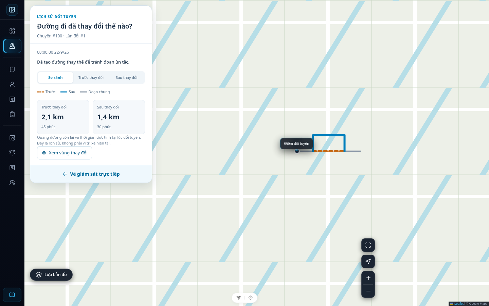
ĐỐI SOÁT HIỆU SUẤT
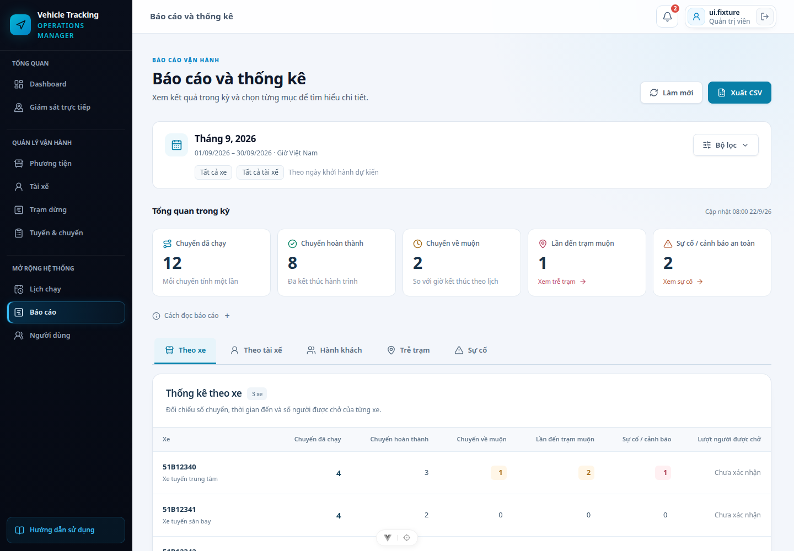
Vào Báo cáo, bấm Bộ lọc để chọn kỳ Theo tháng, Theo năm hoặc Khoảng ngày, rồi lọc phương tiện và tài xế. Bộ chọn hiển thị Tháng 1–12 bằng tiếng Việt. Kỳ tính theo ngày khởi hành dự kiến, giờ Việt Nam. Chỉ tính chuyến đã khởi hành, mỗi chuyến tính một lần theo lần chạy hiện tại; không cộng mọi lần chạy lại mô phỏng. Xóa bộ lọc trả về tháng hiện tại và tất cả xe/tài xế.
Phần tổng quan ở trên giúp đọc nhanh kết quả trong kỳ. Chọn Theo xe, Theo tài xế, Hành khách, Trễ trạm hoặc Sự cố để xem bảng tương ứng. Đổi mục vẫn giữ bộ lọc và trang đang xem. Có thể bấm Xem trễ trạm / Xem sự cố ngay trên thẻ tổng quan. Trên điện thoại, vuốt ngang các chỉ số, thanh mục hoặc bảng để xem phần còn lại.
| Nội dung | Ý nghĩa hiển thị |
|---|---|
| Theo xe / tài xế | Chuyến đã chạy, chuyến hoàn thành, chuyến theo lịch về muộn, lần đến trạm muộn, sự cố/cảnh báo an toàn và lượt người được chở. Hủy trước khởi hành không tính là đã chạy; hủy sau khởi hành vẫn tính. Các cảnh báo không mặc nhiên là lỗi của tài xế. |
| Hành khách | Tổng lượt người được chở cộng số tài xế xác nhận tại mọi trạm đón của chuyến hoàn thành có check-in điểm cuối. Một người đi nhiều chuyến được tính nhiều lượt, không phải số người duy nhất. Người trung bình/chuyến là tổng này chia số chuyến đã xác nhận. |
| Tỷ lệ sử dụng ghế/chuyến | Tổng người được chở chia tổng số ghế trên cùng các chuyến đã xác nhận và biết số ghế lúc khởi hành. Ví dụ xe 10 ghế chở 5 người là 50%. Không tính theo thời gian từng chặng. Số ghế trong bảng là cấu hình hiện tại; tỷ lệ dùng số ghế chốt khi khởi hành. Chuyến cũ chưa có số ghế đã lưu vẫn tính số người nhưng chưa tính tỷ lệ. |
| Các lần trễ trạm | Giờ đến mô phỏng so với thời điểm bắt đầu mô phỏng cộng thời gian đến trạm theo kế hoạch ban đầu; nếu không có giờ mô phỏng thì dùng giờ thực tế so với lịch. Lọc riêng theo chuyến, trạm, xe, tài xế và mức trễ tối thiểu; các bộ lọc này không thay tổng quan. |
| Sự cố và cảnh báo an toàn | Chỉ tính sự cố tài xế báo, lệch tuyến và từng đợt vượt tốc độ, bao gồm mô phỏng. Không tính thông báo nhận/từ chối chuyến, đổi tuyến hoặc điều phối lại. Bấm tên loại sự cố hoặc Xem chi tiết trong bảng để mở popup các lần xảy ra cùng loại và mức độ. Popup cho biết chuyến, xe, tài xế, thời điểm, nội dung và tình trạng xử lý; có phân trang và có thể đóng bằng phím Esc. Cảnh báo tự động chỉ ghi “Đã ghi nhận”, không tự coi là đã xử lý. |
Trong mục Theo xe, bấm Xem chuyến dưới tên xe để xem các chuyến xe đó đã chạy trong kỳ và theo bộ lọc tài xế đang chọn. Cửa sổ hiển thị tên tuyến, mã chuyến, tài xế thực hiện, giờ khởi hành dự kiến, giờ bắt đầu, giờ kết thúc hoặc hủy và trạng thái. Mỗi trang có 10 chuyến, chuyến bắt đầu gần nhất ở trên. Đóng cửa sổ hoặc nhấn Escape giữ nguyên bộ lọc và trang bảng xe; làm mới hoặc đổi kỳ báo cáo sẽ đóng chi tiết cũ.
Trong mục Theo tài xế, bấm Xem chuyến dưới tên tài xế để mở danh sách các chuyến đã chạy trong đúng kỳ và bộ lọc xe hiện tại. Mỗi chuyến hiển thị tên tuyến, mã chuyến, biển số, giờ khởi hành dự kiến, giờ bắt đầu, giờ kết thúc hoặc hủy và trạng thái. Danh sách có 10 chuyến/trang, chuyến bắt đầu gần nhất ở trên; chuyến đang thực hiện chưa có giờ kết thúc. Đóng cửa sổ hoặc nhấn Escape để trở lại bảng mà vẫn giữ nguyên bộ lọc và trang đang xem.
Các bảng có phân trang riêng, 10 dòng/trang. Trong mục Hành khách, chọn Theo xe, Theo ngày, Theo trạm hoặc Theo chuyến. Ở Theo chuyến, bấm Xem trạm để đối chiếu số người lên và số cộng dồn sau mỗi trạm đón. Điểm cuối không có người lên xe. Tổng theo ngày và trạm chỉ cộng chuyến hoàn tất đã xác nhận đủ; ngày chạy là ngày khởi hành dự kiến theo giờ Việt Nam. “Chưa xác nhận” và “Chưa tính được” không có nghĩa là 0 người. Thanh màu dưới tỷ lệ sử dụng ghế theo xe giúp so sánh nhanh; con số bên trên là tỷ lệ chính xác.
Bấm Xuất Excel để tải file .xlsx gồm 13 trang tính: Tổng quan; Hành khách theo xe, ngày, trạm, chuyến; Người lên từng trạm; Theo xe; Theo tài xế; Chuyến theo xe; Chuyến tài xế; Trễ trạm; Sự cố; Chi tiết sự cố. File chứa toàn bộ kết quả trong phạm vi báo cáo, kể cả các dòng ở trang bảng khác và chi tiết chưa mở trong popup. Trang tính Chuyến theo xe và Chuyến tài xế chứa từng chuyến tương ứng với nút Xem chuyến. Tại Chi tiết sự cố, lọc đồng thời loại và mức độ để xem cùng nhóm như popup trên giao diện.
Trang Tổng quan hiển thị các chỉ tiêu theo cột, chia thành hoạt động chuyến xe và hành khách. Mỗi bảng chi tiết có kỳ báo cáo, phạm vi xe/tài xế, hàng tiêu đề và cột đầu được cố định khi cuộn. Dùng mũi tên trên tiêu đề cột để lọc và sắp xếp trong Excel. Ngày giờ hiển thị theo Việt Nam; số lượng, số phút trễ và tỷ lệ sử dụng ghế giữ kiểu số để tiếp tục tính toán. Thanh màu giúp so sánh mức sử dụng ghế và thời gian trễ. Khi in, file dùng khổ A4 ngang; Tổng quan vừa một trang, còn bảng dài lặp lại tiêu đề và phạm vi báo cáo ở đầu mỗi trang.
Trang Trễ trạm áp dụng bộ lọc riêng đã chọn; bộ lọc được ghi cuối trang này và trang Tổng quan. Các trang khác và chỉ tiêu tổng quan vẫn theo phạm vi chung. Dòng tổng và ghi chú nằm ngoài vùng lọc; tỷ lệ, số trung bình và số người cộng dồn không được cộng thành tổng. Trang chưa có bản ghi sẽ hiện thông báo rõ ràng. “Chưa xác nhận” khác với 0 người. Nếu xuất thất bại, thử bấm lại nút xuất file.
TÀI KHOẢN & PHÂN QUYỀN
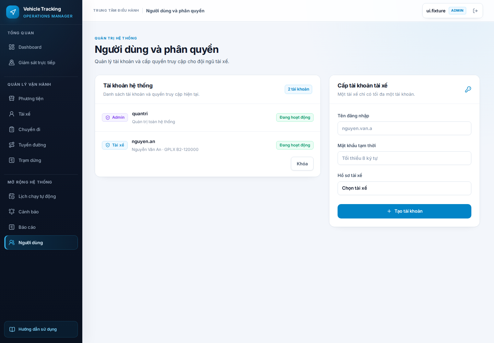
Quản trị viên vào Người dùng để xem tài khoản, vai trò và trạng thái. Để cấp tài khoản, trước tiên tạo hồ sơ tài xế đang hoạt động, sau đó bấm Cấp tài khoản và chọn tài xế chưa có tài khoản. Hệ thống tự tạo tên đăng nhập từ họ tên; nếu bị trùng, hệ thống tự thêm số. Mỗi tài xế có tối đa một tài khoản.
Sau khi cấp thành công, lưu và chuyển ngay tên đăng nhập cùng mật khẩu tạm thời cho tài xế bằng kênh an toàn. Mật khẩu tạm thời chỉ hiển thị ở bước này; nếu không còn thông tin, dùng Đặt lại mật khẩu trên tài khoản tài xế để cấp mật khẩu tạm mới. Tài xế phải đổi mật khẩu được cấp sau khi đăng nhập, cả với tài khoản vừa tạo và tài khoản vừa đặt lại mật khẩu.
Nút Khóa tài khoản hoặc Mở khóa thay đổi khả năng đăng nhập của tài khoản tài xế. Quản trị viên quản lý danh mục, lịch chạy, cảnh báo và báo cáo; tài xế xem chuyến/lịch được phân công, bắt đầu chuyến mô phỏng và chọn đường thay thế qua cổng tài xế. Trang này hiện không có thao tác sửa vai trò hoặc cấp tài khoản admin; admin mới dùng trang đăng ký.
LỊCH TRÌNH ĐƯỢC PHÂN CÔNG
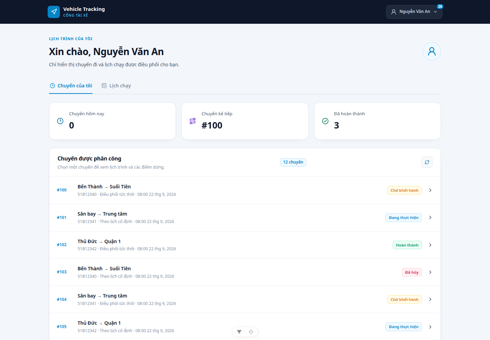
Đăng nhập bằng tài khoản tài xế do quản trị viên cấp. Lần đầu hoặc sau khi đặt lại mật khẩu, hoàn thành bước đổi mật khẩu trước:
Ở trang Đổi mật khẩu, nhập mật khẩu tạm do quản trị viên cấp vào Mật khẩu hiện tại.
Điền Mật khẩu mới và Xác nhận mật khẩu mới giống nhau. Dùng ít nhất 8 ký tự và mật khẩu khác mật khẩu hiện tại. Nếu hệ thống báo mật khẩu quá dài, chọn mật khẩu ngắn hơn.
Bấm Đổi mật khẩu. Sau khi thành công, đăng nhập lại bằng mật khẩu mới. Khi hệ thống yêu cầu đổi, bạn chưa thể xem chuyến/lịch; có thể Đăng xuất nếu chưa muốn tiếp tục.
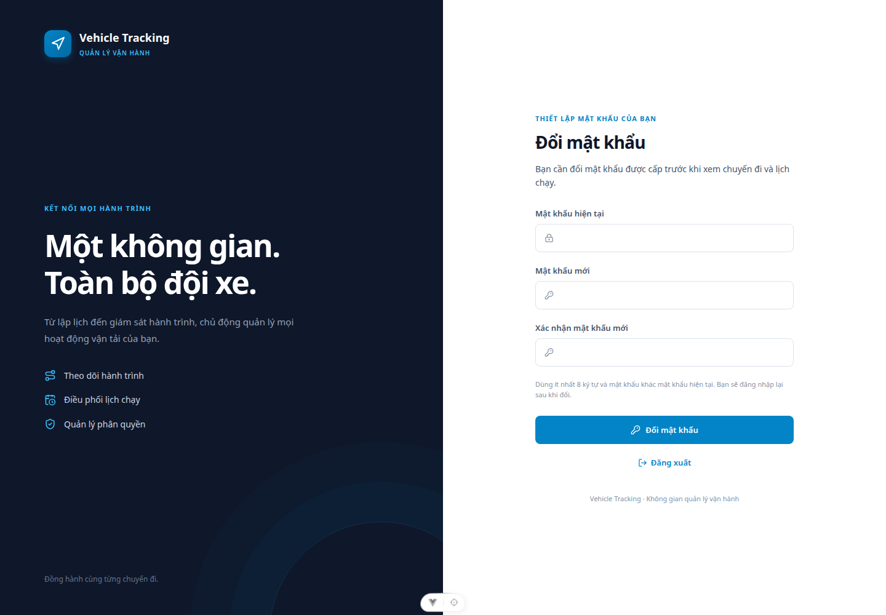
Sau khi đăng nhập lại, trang Chuyến của tôi hiển thị các chuyến được phân công, số chuyến hôm nay, chuyến kế tiếp và số chuyến hoàn thành. Chọn một thẻ chuyến để xem xe, giờ khởi hành, thứ tự trạm và giờ đến dự kiến. Để đổi mật khẩu chủ động hoặc đăng xuất, bấm nút tài khoản ở góc trên bên phải, rồi chọn Đổi mật khẩu hoặc Đăng xuất. Trên điện thoại, nút có chữ Tài khoản hoặc biểu tượng người dùng nếu màn hình hẹp.
Bấm nút tài khoản ở đầu cổng tài xế, rồi chọn Thông báo có biểu tượng chuông để xem yêu cầu nhận chuyến và thông báo điều phối. Menu tài khoản dùng được ở cả Chuyến của tôi và Lịch chạy. Số trên nút tài khoản biểu thị thông báo chưa đọc và yêu cầu đang chờ xử lý; cùng một yêu cầu không bị đếm hai lần. Danh sách cuộn riêng bên trong menu, không kéo dài trang.
Vùng Yêu cầu nhận chuyến tức thời nằm trên cùng trong menu. Chuyến chưa thuộc danh sách được phân công cho đến khi bạn nhận.
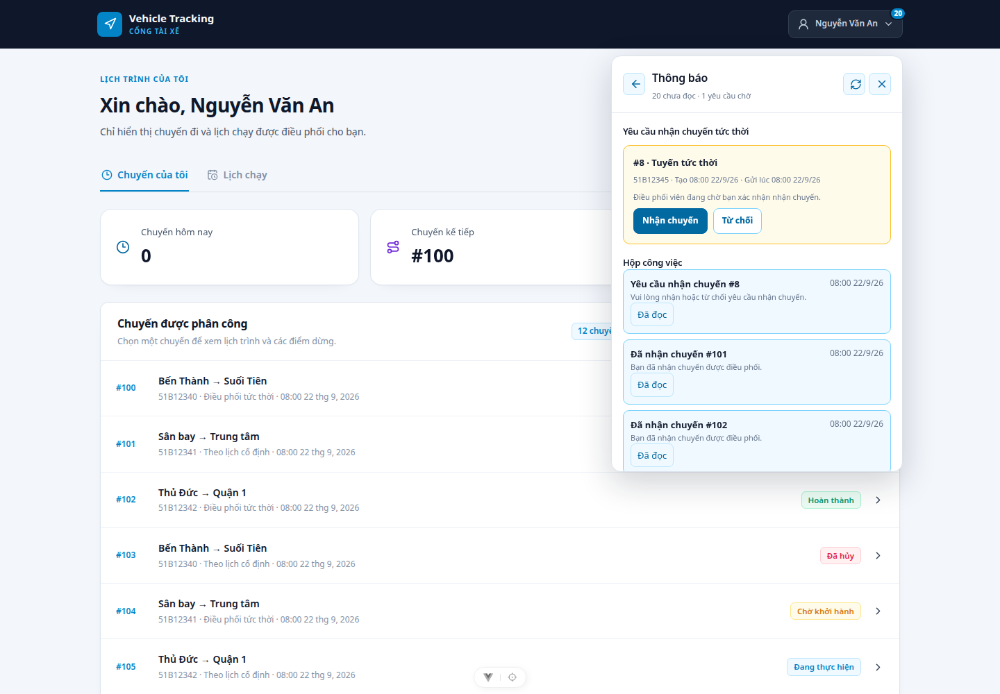
Kiểm tra xe và tuyến, rồi bấm Nhận chuyến. Hệ thống kiểm tra lại khả dụng của xe và tài xế; khi nhận thành công, chuyến xuất hiện trong danh sách được phân công và có thể mở để khởi hành.
Bấm Từ chối, nhập Lý do từ 3 đến 500 ký tự, rồi Xác nhận từ chối. Điều phối viên nhận được thông báo để phân công lại.
Trong chi tiết chuyến, chọn Mở bản đồ và khởi hành, rồi bấm Bắt đầu chuyến. Backend bắt đầu chuyến và simulator cùng lúc; admin theo dõi được xe mà không cần bấm chạy thêm. Chỉ tài xế được phân công có quyền thực hiện.
Bản đồ dùng cùng icon xe và biển trạm có số thứ tự như admin; tên trạm hiện ngay trên bản đồ. Chạm trạm để xem địa chỉ, vùng check-in, thời gian dừng và tọa độ. Panel hiển thị vận tốc, ETA tới trạm kế tiếp, tiến độ và số trạm đã check-in. Mở Các trạm của chuyến rồi chọn một trạm để xem trên bản đồ. Dùng nút Xem toàn tuyến để thấy cả hành trình, hoặc nút Theo dõi vị trí xe để bám theo xe; kéo bản đồ hay mở trạm sẽ dừng bám theo. Chỉ dẫn HERE hiện khi tuyến có dữ liệu; tuyến cũ thiếu chỉ dẫn sẽ báo rõ, không tự tạo chỉ dẫn giả.
Khi xe đang di chuyển giữa các trạm, bấm Đổi đường. Chọn phương án để xem thử đường màu cam và quãng đường/thời gian dự kiến. Chỉ sau khi bấm Xác nhận đổi đường, hệ thống mới áp dụng đường mới cho chuyến và gửi thông báo tới admin. Các trạm còn lại và thứ tự trạm được giữ nguyên; bản đồ admin và tài xế dùng cùng lộ trình.
Bấm Tạm dừng chuyến để giữ xe tại vị trí hiện tại; số người và tiến độ được giữ lại. Bấm Tiếp tục chuyến để chạy tiếp khi không có sự cố chưa xử lý. Mất kết nối sẽ khóa các thao tác này đến khi đồng bộ lại.
Tài xế bấm Báo cáo sự cố, chọn loại và mô tả. Xe tạm dừng, admin nhận thông báo và có thể tiếp nhận để theo dõi. Thông báo hiển thị địa chỉ tại nơi báo sự cố; nếu chưa tra cứu được địa chỉ thì hiển thị tên trạm hoặc đoạn giữa hai trạm. Vị trí này được giữ nguyên khi thông báo xử lý xong. Sau khi xử lý thực tế, tài xế bấm Đã xử lý xong ở sự cố, nhập ghi chú nếu cần rồi xác nhận. Admin nhận thông tin xử lý; chuyến tự tiếp tục khi không còn sự cố đang chờ. Admin không xác nhận xử lý thay tài xế.
Chuyển sang Lịch chạy để xem lịch cố định được giao, tuyến, xe, giờ và trạng thái lịch. Nếu chưa có dữ liệu, liên hệ điều phối viên kiểm tra phân công. Sửa chuyến, lịch chạy và các điều khiển simulator nâng cao vẫn do quản trị viên thực hiện.
CÁCH XỬ LÝ THƯỜNG GẶP
Kiểm tra tên đăng nhập, mật khẩu và trạng thái tài khoản. Nếu tài khoản tài xế đã bị khóa, liên hệ quản trị viên để mở lại. Khi phiên hết hạn, đăng nhập lại rồi mở trang cần xem.
Tài khoản mới cấp hoặc vừa được đặt lại mật khẩu cần đổi mật khẩu trước khi xem chuyến và lịch chạy. Nhập mật khẩu được cấp ở ô Mật khẩu hiện tại, chọn mật khẩu mới và xác nhận, rồi đăng nhập lại sau khi đổi thành công. Nếu không biết mật khẩu hiện tại, liên hệ quản trị viên để đặt lại.
Mật khẩu tạm thời không được hiển thị lại. Quản trị viên mở trang Người dùng, chọn Đặt lại mật khẩu ở tài khoản tài xế, nhập mật khẩu mới và chuyển thông tin cho tài xế bằng kênh an toàn.
Kiểm tra kết nối mạng và địa chỉ website, thử tải lại trang. Nếu lỗi còn lặp lại trên nhiều trang, báo người vận hành máy chủ kiểm tra backend/API. Dữ liệu giao thông có thể lỗi riêng khi nhà cung cấp ngoài không khả dụng.
Trước khi khởi hành cần xe và tài xế đang hoạt động, tài xế được gán, đồng thời xe và tài xế không thực hiện chuyến khác. Chuyến tức thời không có giới hạn theo giờ dự kiến. Trước khi hoàn thành, hệ thống phải ghi nhận xe qua trạm cuối. Mở chi tiết chuyến để xem điều kiện còn thiếu.
Nút chỉ xuất hiện cho chuyến có phiên mô phỏng đã hoàn thành, đã dừng hoặc gặp lỗi. Kiểm tra chuyến có tài xế, không nhận GPS, kết nối trực tiếp đã sẵn sàng và xe/tài xế không chạy chuyến khác. Nếu backend từ chối, đọc nội dung thông báo để biết ràng buộc cụ thể rồi thử lại.
Mở menu tài khoản, chọn Thông báo, rồi bấm biểu tượng Làm mới thông báo. Điều phối viên có thể đã hủy hoặc gửi yêu cầu cho người khác; xe/tài xế cũng có thể không còn khả dụng khi bạn bấm nhận. Đọc thông báo và liên hệ điều phối viên kiểm tra phân công, chuyến đang chạy hoặc lịch xung đột. Một yêu cầu còn hiển thị chưa bảo đảm bạn luôn nhận được chuyến.
Kiểm tra lịch còn bật, ngày/giờ hiệu lực, lần chạy kế tiếp, xe/tài xế/tuyến còn hoạt động và lịch khác có chồng thời gian hay không. Chuyến chỉ được sinh cho các lần chạy sắp tới khi bộ lập lịch xử lý; xem thông báo kết quả ở thẻ lịch.
Kiểm tra đã lưu tuyến qua ít nhất hai trạm và dịch vụ tính đường có sẵn. Vị trí cần có GPS hoặc mô phỏng. ETA có thể chưa có khi chưa đủ vị trí hoặc dữ liệu giao thông; thời lượng theo tuyến đã lưu vẫn xem được trong chi tiết chuyến, còn giờ kế hoạch chỉ có ở chuyến lịch cố định.